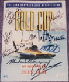

|
An autographed Gold Cup race program!

TRULY A COLLECTOR'S ITEM
Autographed by 10 of the 11 Gold Cup drivers.
Sorry Steve, I thought for sure you'd signed it too.
From top-left, Todd Yarling, Mike Weber U-3 (right), Nate Brown, Dave Villwock,
Mitch Evans, then Ken Muscatel (left of the starboard fin), Greg Hopp U-15,
Mark Weber (in blue), Michael Hanson, and our winner, CHIP HANAUER!
CONTEST RULES:
- THIS CONTEST IS FOR FANS ONLY! Anyone directly involved with the
Gold Cup event or UHRA (SODT volunteers; sponsors, vendors, teams, their
employees, immediate families, etc) are not eligible. If you are a volunteer
at another race site and not an official, you're eligible.
- One entry per person.
-
The winner will be determined by a drawing. Award decision by the
SODT Executive Board is final. We regret that we cannot be
responsible for missing entries.
- Entry is by standard-size postcard only. Others will be cut down to match
for the drawing. Be sure to include your name and postal address. Email
address is not necessary to win.
- The final deadline is September 10th. The winner will be announced in
the next SIGNAL FLAG ONLINE.
- Send your entries to:
--- SODT Webmaster, 1999 CONTEST
--- 29328 Fairfield
--- Warren, MI 48093
-
These rules have been drafted by yours truly, the SODT Webmaster.
The SODT Executive Board reserves the right to refine the rules during
the contest.

 Return to the Top THUNDERFEST page. Return to the Top THUNDERFEST page.
All contents Copyright © 1999 Spirit of Detroit THUNDERFEST, except where noted.
All Rights Reserved.
Web page created by Brian Reed.
|